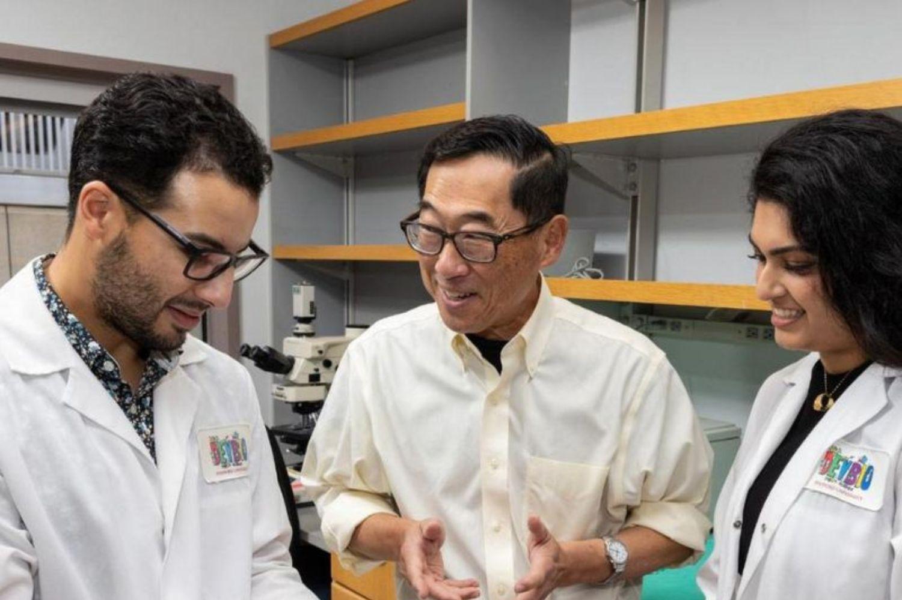
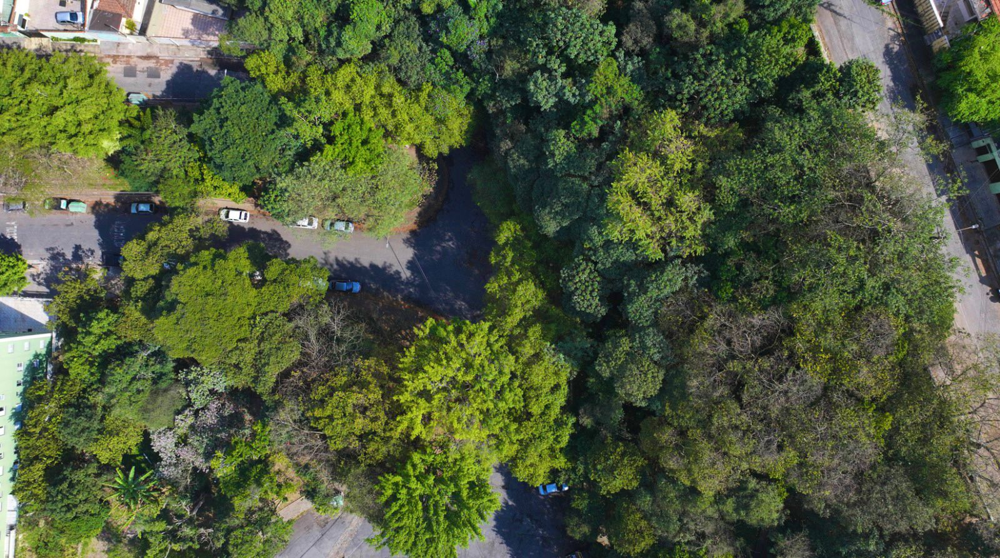

Imagem retirada da página Zootax
Cientistas descobriram uma nova espécie de perereca no Cerrado brasileiro, chamada Ololygon paracatu, identificada em áreas próximas ao município de Paracatu (MG). A espécie foi descrita oficialmente em fevereiro de 2026 em um estudo publicado na revista Zootaxa. Análises morfológicas e genéticas confirmaram que se trata de um anfíbio ainda desconhecido pela ciência. A descoberta reforça a grande biodiversidade do Cerrado e a importância de preservar o bioma diante das ameaças ambientais. 🐸🌿

Imagem retirada da página Viver Maringá
Cientistas da Stanford University conseguiram curar Diabetes Tipo 1 em ratos por meio de um transplante inovador de células pancreáticas combinado com células-tronco sanguíneas. O tratamento eliminou a doença sem rejeição imunológica ou efeitos colaterais, permitindo que os animais vivessem saudáveis por seis meses sem insulina. O estudo, publicado no Journal of Clinical Investigation, mostrou que o método cria um “sistema imunológico híbrido” que impede o ataque às células produtoras de insulina. Apesar dos resultados promissores, pesquisadores ainda trabalham para adaptar a técnica para testes em humanos. 🧬

Foto: Daniel Reis/Acervo SVMA
São Paulo registrou crescimento de 63% no plantio de árvores desde 2019, segundo a Secretaria do Verde e do Meio Ambiente de São Paulo. O avanço é resultado de políticas como o Plano Municipal de Arborização Urbana e a Lei de Arborização de São Paulo (Lei 17.794/2025), que ampliaram o manejo e o plantio de espécies nativas. A cidade já possui mais de 50% de cobertura vegetal e recebeu, pelo quarto ano consecutivo, o título internacional Tree City – Cidade Amiga da Árvore. As ações também incluem participação da população e buscam reduzir ilhas de calor e melhorar a qualidade de vida urbana. 🌳🌆
Imagem retirada da página tecmundo
Um casal viralizou nas redes sociais após receber presentes inusitados no casamento: uma NVIDIA GeForce RTX 5090, um Intel Core Ultra 9 e módulos de DDR5. A surpresa feita por amigos durante a cerimônia chamou a atenção dos convidados e da internet. O caso destacou como componentes de alto desempenho estão se tornando itens de luxo no mundo da tecnologia. A história rapidamente ganhou repercussão global e virou curiosidade entre fãs de PC gamer. 💻🎮